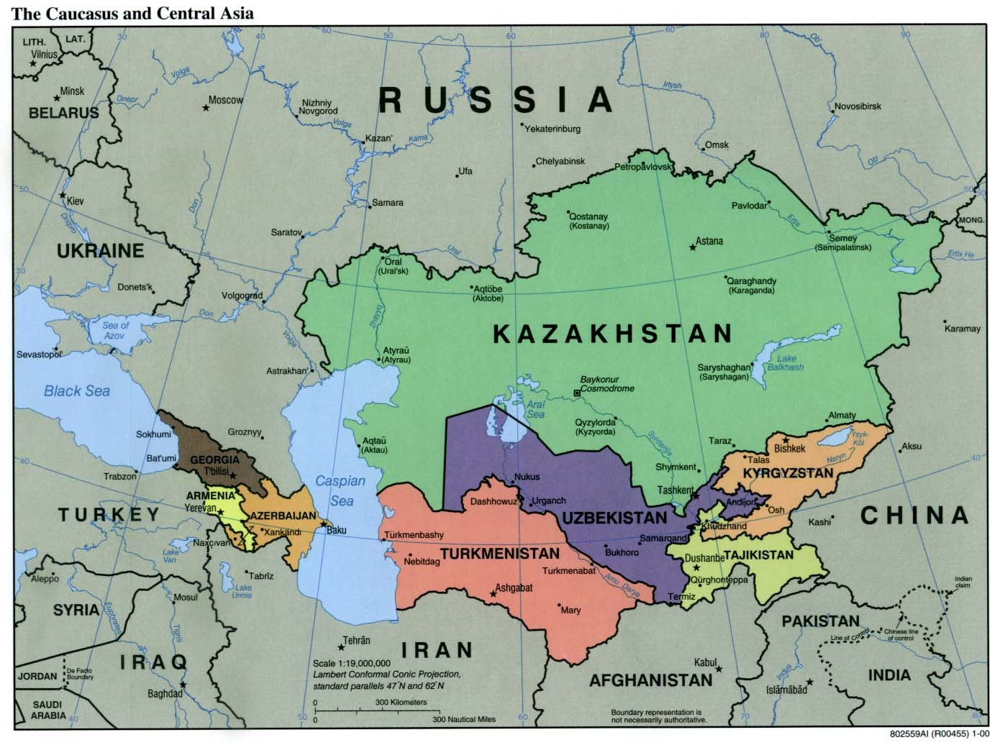

Железная дорога Китай–Кыргызстан–Узбекистан: строится коридор в 486 км за $4,7 млрд
Линия пройдёт от Кашгара до Андижана через Кыргызстан; строительство началось в декабре 2024 года, дорога обходит Россию и открывает новый маршрут из Китая в Европу.

Строится железная дорога (CKU), связывающая Китай, Кыргызстан и Узбекистан. Линия длиной 486 километров идёт от Кашгара в Китае через Кыргызстан до Андижана в Узбекистане.
Маршрут и сроки
Строительство было торжественно начато 27 декабря 2024 года с участием представителей трёх государств. Основные работы на кыргызском участке начались в июле 2025 года и, как планируется, продлятся около шести лет. На территорию Кыргызстана приходится 311,75 километра маршрута.
Стоимость и финансирование
Проект оценивается в $4,7 млрд. Китай предоставит более $2,35 млрд в виде кредита; Кыргызстан и Узбекистан, как ожидается, вложат по $700 млн. На маршруте — 50 мостов и 29 тоннелей.
Технические особенности
Участок Торугарт–Макмал использует китайскую стандартную колею (1435 мм), а участок Макмал–Джалал-Абад — постсоветскую (1520 мм); в Макмале планируется станция смены колеи. 5 августа 2026 года в горной части Кыргызстана завершена проходка тоннеля Кош-Добо Северный № 2 (209,6 метра).
Вице-премьер Кыргызстана Эдиль Байсалов заявил, что железная дорога «фактически преобразит Кыргызстан». По мнению наблюдателей, линия обходит Россию и открывает более короткий маршрут для перевозки товаров из Китая в Центральную Азию и Европу.